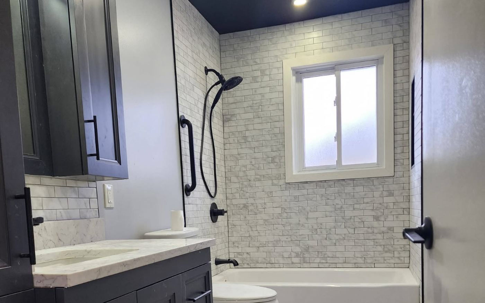

Bathroom renovations
Bathroom Renovations in Cornwall, Ontario
Full gut-and-rebuild bathrooms, tub-to-shower conversions and accessible walk-ins — waterproofed behind the tile, where it counts.
A bathroom is the smallest room in the house and the most complicated thing in it. Plumbing, electrical, ventilation, waterproofing and finish carpentry all have to land within a few square metres, in the right order, and any one of them done poorly ruins the others.
The failure is almost always water, and almost always invisible for the first few years. Tile and grout are not waterproof — grout is porous, and the membrane behind the tile is what actually keeps water out of your floor joists. We install a proper waterproofing system on every wet area, we vent the fan to the outside rather than into the attic, and we coordinate the licensed trades so nothing gets closed up before it has been inspected.

Scope of work
What a bathroom renovation covers
Layout and design
Working out what actually fits. Many Cornwall bathrooms in 1950s and 1960s houses are tight; moving a wall or relocating a door often buys more usable space than any fixture choice.
Demolition and disposal
Full strip-out with the room contained and dust managed, and everything hauled away. We also look at what the demolition exposes — old cast iron drains, previous leaks, and knob-and-tube wiring all turn up in houses of this age.
Plumbing and electrical
Coordinated with licensed trades. Rough-in inspected before anything is closed in, GFCI protection where the Code requires it, and a fan sized to the room and ducted to the outside.
Waterproofing
A bonded waterproofing membrane on shower walls and floors, sloped bases, and properly sealed corners and penetrations. This is the part of the job you will never see and the part that determines whether it lasts.
Tile and finishes
Floor and wall tile, niches, benches and curbless entries, set flat with consistent grout lines. Heated floors if you want them — worth considering in this climate on a tile floor.
Vanity, fixtures and trim
Vanity, counter, mirror, lighting, glass and hardware installed and finished, with the trim carpentry done to the same standard as the rest of your house.
Options
Common bathroom projects
The four we are asked for most often.
Full gut and rebuild
Everything out to the studs and rebuilt. The right approach when the layout does not work, when there is known water damage, or when the plumbing and wiring are original to a mid-century house.
- Layout can change
- All hidden issues addressed
- Longest timeline
Tub-to-shower conversion
Removing a rarely-used tub for a full-size shower. The most requested single change we do, and usually the best value per dollar in an older home.
- Gains usable space
- Easier to step into
- Often no layout change needed
Accessible and walk-in
Curbless entry, grab bar blocking built into the walls, wider door openings and bench seating. Worth building in now even if the need is years away — blocking costs almost nothing at framing stage and is a demolition job later.
- Curbless and low-threshold entries
- Blocking for grab bars
- Slip-resistant flooring
Powder rooms and ensuites
Small footprint, high impact. A powder room is often the fastest visible upgrade in a house, and an ensuite addition can usually be carved out of an oversized bedroom or closet.
- Quick turnaround
- High visual impact
- Ensuite additions
What we find in older Cornwall bathrooms
Much of Cornwall’s housing stock dates from the 1950s and 1960s, and on a full strip-out we regularly find the same three things: original cast iron drain stacks at the end of their life, no vapour barrier or ventilation behind the tile, and bathroom fans vented into the attic rather than through the roof.
That last one quietly puts every shower’s worth of moisture into your attic insulation all winter. None of these are unusual and none are catastrophic if they are found and dealt with while the walls are open. We quote a contingency for them rather than pretending a 70-year-old house will have no surprises.
Service areas
Bathrooms across Cornwall & SD&G
Based in Cornwall and working across Stormont, Dundas and Glengarry. If your town is not listed, call us anyway — we travel.
FAQ
Bathrooms: common questions
How long does a bathroom renovation take?
For a full gut and rebuild, plan on two to four weeks of site time for a typical main bathroom, longer if the layout changes or if we find something behind the walls. The schedule is driven less by our labour than by sequencing: rough-in inspection, waterproofing cure times, tile set and grout, then finishes. Rushing any of those is how a bathroom fails early. We give you a written schedule before we start.
Can I use the bathroom during the renovation?
Not the one being renovated. If it is your only bathroom, that is the single most important thing to plan around, and we will sequence the work to minimise the days without a working toilet rather than treating it as your problem. Tell us at the quote stage if it is your only bathroom — it genuinely changes how we plan the job.
Do I need a permit for a bathroom renovation?
Replacing fixtures in the same locations generally does not require one. Moving plumbing, altering structure, or adding a new bathroom does. Anything that changes drainage or venting is plumbing permit territory. We confirm with the City's Building Division for your specific scope and handle the application where one is needed.
Is tile waterproof on its own?
No, and this is the most costly misunderstanding in bathroom renovation. Grout is porous and tile assemblies are not watertight. What keeps water out of your floor structure is the waterproofing membrane bonded behind and beneath the tile. A shower built without one will look identical on day one and will be rotting the subfloor by year five.
What does a bathroom renovation cost in Cornwall?
The variables that move the number most are whether the layout changes, whether plumbing has to be relocated, the size of the tiled area, and the fixture and tile selections — which can vary by several times over for the same footprint. A tub-to-shower conversion in an existing footprint sits at the low end; a full gut with a moved wall and a curbless shower at the high end. We quote itemised so you can see which choices are driving the cost and adjust them.
Free quote
Get a free quote for your bathrooms project
Tell us what you are planning. We reply to every inquiry, usually within one business day.
Services
Other things we do
Deck building
Custom pressure-treated, cedar and composite decks engineered for Eastern Ontario frost.
Read more 02Fence installation
Privacy, picket, PVC, aluminum and chain link — set deep, set straight, set square.
Read more 03Siding installation
Vinyl, engineered wood and board-and-batten, with soffit, fascia and eavestrough.
Read more 04Window replacement
ENERGY STAR windows and doors installed to spec, air-sealed and properly flashed.
Read more 06Kitchen renovations
Layout changes, custom cabinetry, islands and finish carpentry done by one crew.
Read morePrefer to talk it through first?
Call us and describe what you are dealing with. We will tell you honestly whether it is a job worth doing now.